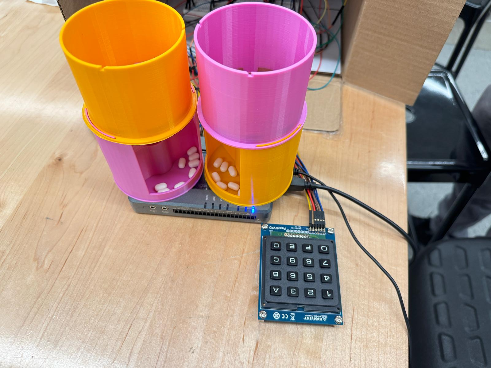
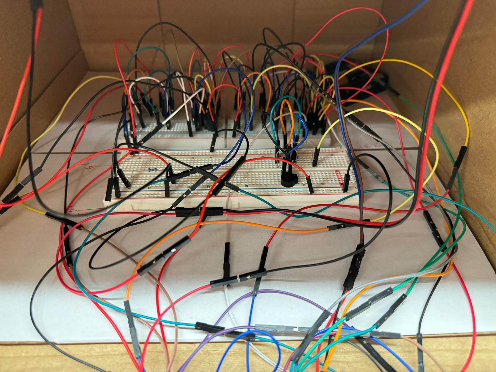
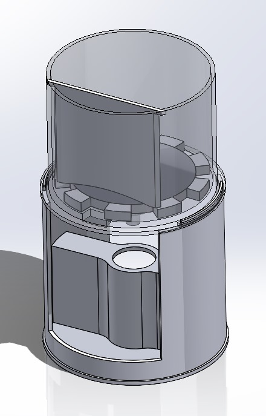

Automated Patient-Centric Medication Management System
- by Karthik Koundinya and Kushal Shah
ME/AE 6705, Introduction to Mechatronics Georgia Institute of Technology Course Instructor: Dr. Alexis Noel
Introduction
The demand for patient-centric solutions continues to drive innovation in the dynamic healthcare landscape. Addressing the
challenges patients face in shared hospital rooms during the recovery process, we propose a groundbreaking concept – an
Automated Patient-Centric Medication Management System.
Traditionally, patients in recovery rely on caregivers for the timely administration of medications. However, the availability of
caregivers is only sometimes guaranteed, leading to potential disruptions in medication schedules. Our concept seeks to revolutionize
this process by introducing an automated system that allows patients to self-administer their medications without constant
reliance on nursing staff.
The core idea involves scheduling medications for multiple patients and authenticating their access to prescribed medicines
through passcode authentication technology. By giving patients control over their medication routines, we aim to enhance
efficiency, reduce dependence on caregivers, and improve the overall healthcare experience, particularly in shared hospital rooms.
This project embodies a vision of patient empowerment and represents a significant step towards redefining the standards of
patient care in modern healthcare settings.
System Requirements
Mechanism: Dispensing Mechanism (3D printed)
Sensors:
Temperature Sensor (PMOD TMP3)
Accelerometer (on-board)
Keypad (PMOD KYPD)
Actors:
Buzzer (Soberton GT-0950RP3 magnetic transducer)
LED
DC motor with encoder (x2) (SKU 290-006)
Miscellaneous:
NI myRIO
Website/Webpage
LabVIEW
Breadboards, Jumper Cables, Resistors, Diodes, Battery, L293DNE (H-Bridge) etc.
Why these requirements?
DC motor with encoder: This component is crucial for the mechanical part of the system. The motor, coupled with an encoder, allows
for precise control over the dispensing mechanism, ensuring accurate and controlled dispensing of medicines.
Buzzer: The buzzer serves as an alert system for patients. Each patient's unique buzzer sound helps personalize and ensures
that the right person is notified at the right time for taking their medication.
Keypad: Patient authentication is a critical aspect of medication dispensing systems. Using a keypad with a passcode adds a layer
of security, ensuring that only authorized individuals can access the medicines.
Temperature sensor: Medications often have specific storage temperature requirements. The temperature sensor helps monitor and ensure
that the storage conditions are appropriate for the medicines, preventing degradation or spoilage due to temperature variations.
Accelerometer: This component detects whether the medicine has been dispensed. It adds another layer of confirmation to the system,
helping to track medication usage and ensuring that patients receive the prescribed doses.
LED: The LED is a visual indicator for hospital staff or maintenance personnel. It notifies them if the medication storage conditions
are not within the acceptable temperature range, allowing timely intervention to prevent medication damage.
NI myRIO: The NI myRIO is the microcontroller that serves as the system's core. It executes the logic of the entire system, coordinating
the actions of the various components to ensure the accurate and secure dispensing of medications.
Website/Webpage: The interface for editing patient details provides a user-friendly way for healthcare professionals to manage and update
patient information and medication records. The medication dispensing system uses this record to give patients the right medicines at
the right time.
Working Principle of the System

External System

Circuitary

Dispensing Mechanism
The innovative medication dispensing system seamlessly interfaces with a designated website, continuously retrieving up-to-date patient
records that meticulously outline prescribed medicines and their corresponding dispensing schedules.M
The intricately designed mechanical system comprises a receptacle featuring a purpose-built slot for efficient medication passage.
A dynamically responsive, conical-shaped rotating disc, intricately connected to a motor, hosts multiple pill slots, ensuring a perpetual
supply.
As the system approaches the scheduled dispensing time, precise motor rotations align a conical disc slot with a fixed slot in the container
base, prompting a seamless pill transfer. The ensuing impact of the dispensed pill on the base container, housing the DC motor,
triggers the onboard accelerometer, registering a successful dispensing cycle.
For accuracy, the dispensing mechanism is intricately integrated into the NI myRIO, utilizing its embedded accelerometer for
precise pill detection.
A strategically placed vertical separator demarcates distinct regions for pill collection and dispensing within the top container,
showcasing a thoughtful and efficient system architecture.
Video Demonstration
Challenges Encountered
The accelerometer does not always correctly detect the pill dispensed because of the interference from the motor vibrations.
The current mechanism is not robust to different pill sizes.
3D printing only sometimes guarantees the required tolerance. Hence, the system had some geometrical errors. These errors were handled by filing.
Conclusion
Successfully connected myRIO to WiFi and fetching data from a webpage.
Successfully designed and implemented a fully functional mechanical system.
Successfully integrated various sensors and actors with a mechanical system to develop a fully functional mechatronic system.
Tackled a critical real-life problem.
Potential Next Steps
Use a weight sensor instead of an accelerometer for accurate dispensing detection.
Upgrade the dispensing mechanism to be robust to pills of various sizes.
Use a dynamic website to record/edit patient medication details in real time.
Separate the motor and dispensing detection system to eliminate interference from motor rotation/vibrations.